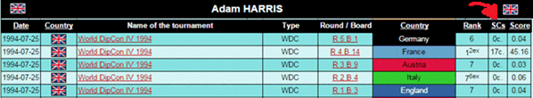
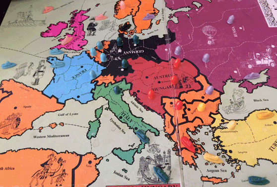

FRANCE FOR EXPERTSby Toby Harris |
|---|
|
~ John Wilman, "Watch Your Back!" (postal Dip Zine) from circa late 1970's. ~ Toby Harris, 9th June 2015. The reason is quite simple; France is a country that anyone (novice or expert) can get lucky with and have a good day. It is the perfect country for "going through the motions", playing each move as it happens and eventually topping the board. So in many respects, winning a Best Country award as France is in fact the hardest of all Best Country awards. For example;,/p>  Coupled with the fact that the World Diplomacy Database shows that France is the country I have played least of all over the years, the only "Best Country" awards I have for France are a bunch of weedy old paper certificates and no shiny silverware trophies. Booooo! (sniff...) But don't let this trifling fact make you feel any sorrow for your author, because there have been numerous "one round tournaments" over the years where (in playing France, and winning the tournament) the tournament 1st place trophy is in effect ... a "Best France" also!
How to Really Screw Over Germany And it is from one of these beloved trophies (Suncon 1993) that our story begins. As this particular game was announced, it was clear that I would be having shenanigans with England. So my first concern was how to keep Germany busy, for the whole game. Here was the plan: A(Mar) s A Par-Bur, alongside an invitation to support Italy into Munich. France is an incredibly powerful country, but this opening is played so rarely. By not opening with this supported attack on Burgundy France is effectively throwing away its immediate advantage over Germany. Sure it is not very diplomatic, and does eliminate any trust Germany can have for you thereafter. But ask yourself this; what can Germany do about it? France can hold off a joint attack from Germany & England. The key is to keep Italy busy. I told Italy that all I wanted was Bel & Hol in the long term; and he could take all three German home centres with my help. So Munich supported Bur-Ruh, and Ruh supported Mun-Kie in 1902. With followed-up Italian armies via Tyrolia, Italy was in Berlin by Fall 1903 and Germany was left with a solitary fleet in Denmark! Perhaps it would be best to let Olde Faithful do the talking and explain the position better…  With Italy nicely annexed in Germany, and now headed towards Turkey, I was free to take on England mano a mano. The position clearly favours France here, made all the sweeter by the persuasion of Russia to move Moscow north and grab Norway for himself. From here the entire English homeland fell like a house of cards. But it doesn't end there - with so many northern fleets after the demise of England, Scandinavia became an easy grab and (le piece de resistance) Italy's "pieces" in Germany gave no realistic "resistance". It is a fact to remember; Unaided Italian armies cannot hold the German centres from the South! A(Mar) S A(Par) - Bur? This is not the only tournament win that has come my way from this opening. I am not saying it's the "best" opening, but am saying you have to always ask yourself... what can Germany do about it? Sometimes you may want to work with Germany in the mid-game and that would make this supported attack on Burgundy a foolish choice of opening. At the European Championship 1998 top table, I found England to be the more amenable player from the start. So in this case opened with this same supported attack on Burgundy. The game became relatively balanced quite quickly. But when you have three armies on your homeland (and one of them is in Burgundy), you can be assured that when the game does eventually crack wide open then you will be in prime position to take advantage of claiming your place amongst the front-runners for the prize.
The winning move was to disband A(Tyr), after it was dislodged in the penultimate turn. Disband? It's the final season - why disband? It could have made a juicy retreat and had a crack at another centre! The reason was because during the Diplomacy of that season, Bruno Andre Giraudon (WDC 1995 winner) who was playing Austria said to me: "Toby, if you have to retreat A(Tyr) then you disband it". The moves were read out and it was Bruno himself that dislodged my A(Tyr). What a stabber! But my retreat options were limited to Bohemia or off the board. i.e., next to Vienna for the final turn. And then it dawned on me; if I retreat to Bohemia then Bruno will cover Vienna in the last turn, and that means he is not covering other centres from my closest rival playing Russia. I disbanded, Bruno defended against Russia and I won my final Dip tournament (EDC '98) for seventeen years! The 1996 London Trophy The tankard (pictured at the top of this article) was also from playing France, at the London Trophy of 1996. This was a particularly interesting game because three distinct tactics came up which you might not get in every game. So all three tips are worth bearing in mind for future. England was played by Dan Lester, France by Peter Birks and Italy Shaun Derrick. This five-board, one-round tournament was (as became tradition) played in a London pub. This is an important point, as will become apparent. As the boards were announced, Pete Birks could be heard saying "You're dead Harris!" - much to the delight of the cheering mob, as they patted him on the back and wished him every success in his quest. Tip 1 - FOLD Your Orders! During the Spring 1901 negotiations, Dan wrote his preliminary orders quite early and placed them face down on the table whilst chatting openly to some of the players. The deadline was five minutes away yet. But having used a rather heavy pen (and not having folded his piece of paper), I could quite perfectly see the order: F(Lon) - ENG. Through the paper! So rather than be sneaky about it, I just pointed at this one order gleaming through Dan's order sheet and invited him to have another quiet word. We chatted again, he changed his order and we agreed on a DMZ in the Channel. Nice. My Spring 1901 order was F(Bre) - ENG (STAAAAAB!)… it would have been rude not to. This is not specifically a "France" strategy, but a very important point to note. Always fold your orders over, to hide any heavy writing from shining through the paper. Nobody can be blamed from noticing your orders in this way - it was very clear for all to see. Dan learned wisely from this error, and has never made this same mistake twice. Good. Tip 2 - Convoy to Wales via Pic or Bre? With the games starting at around 10:30 am, the bar opened up by the end of 1901. So I bought Pete (Germany) a drink. I knew he liked whisky, so we had a large shot each. And we had a second in Spring 1902 as well, where the subject of discussion was how to convoy to Wales. This may not be an immediate opportunity, because Dan would most likely have the position to cover Wales in the Fall. But it was important to discuss with my new ally Pete (who had been nicely oiled with a shot or two of whisky) on how best to set the moves up. "So Pete, I will move Bre-MAO and Par-Pic and then try to convoy to Wales or London". He responded: "Why Picardy? You can make the convoy just as well from Brest". Time for Olde Faithful to show the map... Pete was right of course. And I had absolutely no realistic argument to move to Paris to Picardy instead of Brest. That is... unless I wanted to stab him. This was a very powerful Diplomatic argument from Pete, and is so basic. Throughout every game of Diplomacy the stronger players will always try to jockey for the best strategic positions. Picardy was clearly a better choice of move for me, keeping the best options open. But on this occasion, if I was to keep my German ally sweet for another year or two, then two shots of whisky were not quite sufficient! Considering the homeland safety that the two returning armies from Iberia would give me, I moved Paris to Brest as requested. And then said to Pete: "after that goodwill gesture from me, I am guessing it's your round?" Tip 3 - Diplomacy and Alcohol Do Not Mix By Fall 1904 Dan was down to his final unit, with Pete and I in a game-grabbing alliance position. And we had downed about as many shots of whisky as centres. But unbeknown to Pete, I hadn't drunk all of mine ... some had been secretly tipped into the nearby flower pot! So as Pete moved everything East against Russia (with the intent that I head South), I flew through Munich, Ruhr, Kiel etc at lightning speed. And yet Pete still had a huge smile on his face, albeit with glazed eyes. Alcohol in moderation is perhaps the message here. As I had centres galore swimming around my head, Pete had but tweeting birds and stars. The following year (London 1997) I was disqualified for having "too easy a board allocation"! It had experienced players, but (as England) I was the player who won over the allegiance of newbie playing Germany; we crushed the board quickly before it became a solo-rush. So I was disqualified. "Booooo - not fair" came the cries of the "masses"... numbering just one! Gascony Moving on… Gascony is France's key province. In most games you won't open with a supported attack on Burgundy; its strategic advantage is usually outweighed by its diplomatic disadvantage. We all buckle sometimes 'nicely' That means some basic defence is required, and Gascony is king when it comes to defending France. Rather like with Albania for Austria, there are some good moments to consider moving the unit. Typically this movement is to strengthen an attack on a neighbour, such as:
The greatest of care must be taken when making the long convoys; it would be rather embarrassing to successfully convoy to Clyde in the very season that Germany sneaks into Burgundy! So don't be too quick to make that all-powerful convoy without looking over your shoulder first. If in doubt this is one occasion where I would say that to wait a turn can prove highly beneficial. This is easily disguised with a mis-ordered fleet in the convoy, leaving the army back in Gascony. The Gascony opening (that's Paris to Gascony, not Marseille!) is very popular. But it is far more important to occupy Gascony in Spring 1902; in 1901 you are usually just moving through the province to take Spain, rather than setting up your defences. In many respects, opening A(Par) - Gas means that your other two units can (quite literally) move anywhere and still be in a potent position for Fall 1901. Even obscure combinations have their merit;
(Really? I played this opening in the first round of WDC 2008, just the 'break the ice' and get the game off to a fun start. I didn't win. But when playing these moves on the top table of Sydcon 1998 (Lund, Sweden) I won the game and tournament...)
(Left: Sydcon 1998 1st Place trophy. Right: your position after Spring 1901 with this opening) I hope the map proved useful in explaining the post-Spring 1901 position Ok, firstly you have to be confident that you will not be embarrassed by neighbours entering ENG, Bur or Pie. And if you can be sure of this then the opening has a lot going for it;
This final point is very valid. It is a novel alternative to waiving a build in Fall 1901. Many France's go a build short - just add one army for now, and "wait and see" what will happen in 1902 before choosing the second build. France is the best country for "waiting and seeing" in this way - it can afford to, unlike most of the other Great Powers. And the waived build sends a very clear message to Italy and England: if you come in my direction, I will build a new fleet in your face! I TRULY hate "wait and see", but as France it is a great tactic. France needs a second fleet. It always makes me cringe when France builds two armies in 1901; I feel so sorry for their lack of foresight! The reason is because if it is your intent to go for Germany (and stay sweet with Italy and England), even in these extreme situations you still don't need more than three armies on your homeland. So to build two armies (and no fleets, or at least no waived builds) transforms France from the most powerful country on the board into a sitting duck. So when attacking Germany, better to build just one army and keep a build spare for 1902... just in case. Keep Your Options Open!! I took the waived build at EDC 1998 top table, which came in very handy. In 1902 Germany dislodged the English army in Belgium and he retreated to Picardy. Just the excuse needed to pop a F(Bre) on the map and crush the offending unit! Cover Brest Against England's Stabby Channel Opening? If England opens to Brest then it is most definitely not a case of "Bah, ze game is over!" This is an area that Rene Van Rooijen has truly mastered, and better illustrated by the maps...
So if England opens to the Channel ... don't get angry, just "Do the Rene" It's a great move!! Who Are Your Best Allies? That is the wonderful thing about France; Le Hexagon allies beautifully with any county. And not just the obvious neighbours. France is the one Great Power on the board that lurrrrves Juggernauts (yes precious, we loves Juggernauts, don't we my love), is reasonably happy to see a growing Turkey and because of its ability to straddle the natural stalemate lines so quickly, is exceptionally potent in attack whilst having that wonderful defensive shape also. If you could order a single unit for one other country in Spring 1901, what would it be? This doesn't actually take too much consideration: A(Mos) - StP. It either helps your attack against England, or keeps England occupied in the north whilst you do "sneaky things". If Russia ever says to you "I am considering Mos-Stp", then once you have wiped away your excited discharge with tissues It takes a LONG time for Russia and France to ever come into genuine conflict with each other, and many things can happen in the interim. So if there are any moves where you can help each other (e.g. ENG and StP) they are usually gifts that need accepting. The downside of this is that if one stabs the other (and doesn't make said move) then England clearly becomes focussed on the aggressor, opening themselves up to the stabber in the process. So there can be an element of bluff, with relatively low cost. i.e., if Russia lies to you in Spring 1901 (e.g., you open to ENG and they don't move to Stp) then the question arises... what are you going to do about it? Just park it for later; get revenge at game-end? As either country, I absolutely adore the France / Italy Cartel. "You go your way, I go mine". Work back-to-back and both race along your separate paths to Moscow. Although "Cartel" applies to pretty much any alliance, I always consider it more apt for the France / Italy agreement. And as long as both sides are continuing to expand, no strategic advice is necessary - just keep on hammering away in your respective directions, safe in the knowledge that the non-aggression pact will hold fast.
And (because of the scoring system) the F/I Cartel is the perfect alliance at Manorcon! The Final Page This article is long enough, so what to consider for the final rant? Perhaps the best consideration for the long game is the France is so often (in 1911 - 1912 UK games) the saviour of Turkey, who eventually goes on to win the board. Just beware of the Turkey who starts badly, as you dab up the English centres with your crusty bread and gobble some dessert from Germany too before heading South, ultimately makes a comeback. So beware of the comeback-Turkey. Jim Mills (who regularly had massive results as Turkey at Manorcon) had a phrase...
…and then the French came South Be mindful of your position and don't let your operations allow another to steal the board. WDC / EDC So many players have won major tournaments as France on the top table. Aside from the aforementioned EDC of 1998, Gwen Maggi did it in EuroDipCon 2011, Cyrille Sevin WDC in 2013, and Nicolas Sahuget likewise in WDC 2006. There are many other examples. But there are not so many bears, so I will end on this (very tender) subject... How To Win A Bear Actually I am the wrong guy to advise for sure, but Nicolas played this WDC final much like I did this year I think. No mistakes is the first consideration. We all make mistakes, and if you make one in a WDC final then it is likely you will face punishment, and not win. Nicolas waited. He saw the E/G alliance form and head east towards Russia (er, me). He welcomed it privately (he never admitted this to me, but I am sure it is true), stayed calm, and did not rush to attack anybody. And when the E/G alliance was most "off guarde" he took his advantage and attacked, lapping up all those juicy centres, on the golden path for a golden- trousered bear, which eventually he won. Deservedly so? Yes, for sure. I never had bad feeling about it - only bad feeling in myself for not securing my own bear! The WDC 2006 top table is a good game to watch in full, because Nicolas played the "wait and see France" perfectly, and that is how to win a WDC, tournaments, gold, silver, prizes and bears!
If you wish to e-mail feedback on this article to the author, and clicking on the envelope above does not work for you, feel free to use the "Dear DP..." mail interface. |